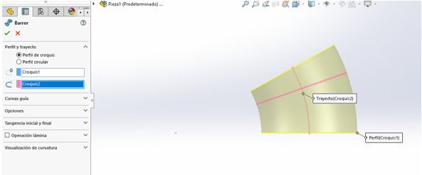
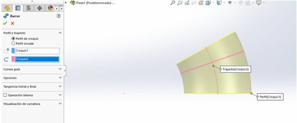

2. Computer-Aided Design
This week I compared the performance of SolidWorks and Fusion360 in terms of 3D modeling applications.
Research
SOLIDWORKS is 3D CAD design software for modeling 3D parts and assemblies and 2D drawings. The software offers a range of solutions to cover the aspects involved in the product development process. Its products offer the ability to create, design, simulate, manufacture, publish and manage design process data.
Autodesk Fusion is a cloud-based 3D modeling CAD, CAM, CAE, and printed circuit board software platform for product design and manufacturing. Design and engineer products the way you want to ensure fit, aesthetics, form, and function. Design, engineer and create what you want with comprehensive electronic components and printed circuit board design tools.
Among the programs we reviewed, the one I liked the most is SolidWorks because I am more familiar with the program and Fusion360 seemed to me to be good only when you really know how you want your drawing without so many measurements, that is, more for modeling.
3D Software
SolidWorks
- Open the Solid Works application.
- Click on the sheet to create a new document, select "Part" and then "OK".
- To start drawing select one of the drawings (elevation, plan or top view). Select the "Sketch" tab and then the "Sketch" option.
- You can see tools to be able to start drawing. In this case I selected the circle.
- One option that this platform gives us is that we can use the equations to be able to modify measurements in the future in an easier way. To find the option place the mouse over the SolidWorks logo, go to the Tools tab and you will find Equations...
- This box will appear where you indicate the name of the variable and its measurement.
- To measure the dimension of the circle, press "Intelligent dimension" and then select the perimeter of the figure to which you want to give dimension.
- As you can see, to place the measure of the equation, you must place a "='Name of the variable'" and if you want to put operations right there.
- To give it a 3D dimension, click on "Exit sketch".
- Following the previous steps, we can put another sketch in a different plane and make another figure, in this case I used an arc.
- Now with both planes that we have, we can create a kind of tube taking as a base the circle and the rest of the way the arc.
- We select the face of the base and we can draw another circle.
- In Operations we select "Extrude overhang/base" and we can also give the equation size to our figure.
- We do the same on the other side.
- We can make a cut in a tuvo style by selecting the option "Sweep cut".
- We place in one of the bases a circle that we can center with constructive lines and their respective references.
- A circular matrix can be made to duplicate the circle as many times as desired.
- When leaving this sketch we can Extrude cut of all these circles up to a certain height.
- You can also round the edges of the figure with "Rounding".
- Final result


 

3D Model
Fusion360
- Open the Autodesk Fusion 360 application.
- When the program starts, it should look like this.
- Select this option.
- Select a plane and the shape you want to work with.
- We place the measurements of the figure and the number of lines we want to work with, the more lines the more movement the figure will have.
2D Software
Inkscape
One of the programs I tried for 2D modeling was Inkscape which was really intuitive and had tools with which you can make drawings and deform them.
{kind=link}